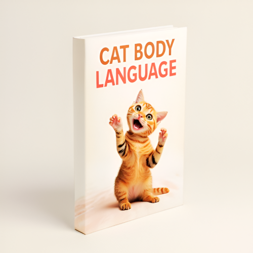

Cat Body Language
Product profile · Marketplace data 2026-10-09 · Sales-page research 2026-10-09 · Categories: Animals & Pets

Marketplace record
| Product type | E-books |
|---|---|
| Price | $22.37 (Single payment) |
| Affiliate commission | 50% |
| Refund window | Per the vendor's sales page — check the official page before buying |
| Vendor | MyoWinKyaw (listed since 2024-09-24) |
| Marketplace stats* | Cart conversion — · cancel rate — · affiliate earnings/sale $11.19 |
* Vendor-side marketplace statistics reported by Digistore24; they depend on traffic quality and are not a forecast.
Vendor's marketplace description
The Cat Body Language book is a valuable resource that will help cat owners truly understand their pets. It’s filled with simple yet effective insights into feline behavior, making it easy for readers to decode their cats' emotions and needs. By promoting this book, you’ll not only be providing a great product to your audience, but you’ll also profit from tapping into the growing pet care market. …
From the vendor's sales page
Page title: Cat Body Language - Digistore24
Opening copy
Do you ever wonder what your cat is really trying to say? When they purr, flick their tail, or give you that slow blink, what does it all mean? Imagine being able to understand every move your cat makes. You’ll feel closer to them, and they will feel more connected to you. My Cat Body Language book reveals all the secrets to understanding your cat’s behavior. You will learn what your cat is thinking, feeling, and trying to communicate. You’ll finally be able to build the bond you have always wanted with your feline friend.
Cats aren’t as mysterious as they seem. They use their body language to speak to us every day. When you know how to read their signals, you’ll understand them like never before. This book will teach you how to recognize what your cat is feeling just by observing their body. You’ll be able to respond to their needs in ways that strengthen your relationship. Whether your cat is happy, nervous, or playful, you’ll know exactly how to handle each situation. This book is the key to unlocking a happier, more trusting bond with your cat.
For years, cat owners have struggled to understand their cats. Many think their cats are independent or distant, but the truth is, your cat is always communicating. You just need to know how to listen. When you learn the secrets behind your cat’s body language, everything changes. You’ll know exactly when your cat wants to play, cuddle, or when they’re feeling anxious. You’ll be able to give them the comfort they need, making your cat feel more loved and understood.
Prices mentioned on the page: $10 · $20.00 · $20
Guarantee language found: “60” — always confirm the current terms on the official page before relying on it.
Research method: raw HTML fetch · 2448 words on page · quality: rich · researched 2026-10-09. Full research file (MD) ↗
Where to check it out
Read the vendor's full sales page (current price, guarantee terms and bonuses are listed there):
View official sales page
That link is an affiliate link — if you buy through it we earn a commission from the vendor at no extra cost to you.